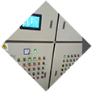

公司简介
桂阳贡禽农牧科技有限公司创建于2012年底，是一个及蛋鸡养殖、淡水养殖、饲料加工、肌肉鸡肉、鸡蛋加工、科技培训及营销于一体的现代高科技企业。公司拥有固定资产3000万元，现
有年产一万吨饲料加工厂一个，年出笼20万羽良种繁育基地一个，年饲养蛋鸡6万羽生产基地三个，年产鲜蛋1800万枚，年产值50000万元，公司现有职工50人，其中具有中级技术职称以上7人。
经营理念
桂阳贡禽农牧科技有限公司坚持“以工业的理念发展农业、以工程的模式发展基地、以循环的理念提升产业”，致力于农牧产业的规模化、规范化、标准化、专业化、现代化发展。秉着“诚实守信、科技创新、生态发展、循环增效”的原则，按“公司+合作社+基地”模式，实行“五统二分”管理方式发展，用心做好每一个细节，为社会提供越来越好的安全、生态、健康的食品。
-
规模化
-
规范化
-
标准化
-
专业化
-
现代化
基地建设
一、科学规划、合理选址
标准化蛋鸡养殖场基地的建设严格遵循贡禽农牧科技有限公司的规划定位与统筹布局，在具体选址上严格遵循以下原则：
1、天然防疫原则：即场址尽量远离交通干线(最少不低于500米);远离居民生活区(最少不低于500米);远离生活水源区(水源污染率为零)。
2、生态循环原则：蛋鸡养殖基地主要建在果园、茶园和水产养殖场内，使蛋鸡养殖产生的副产品—鸡粪在果园、茶园和水产养殖地就地消化，实现循环利用、综合增效的目的。
3、容量定产原则：根据当地粪肥需求量确定蛋鸡实际饲养量，确保基地粪污就地消化，并产生综合效益。
二、科学建设、规范操作
根据场地实际，科学选择标准建设模块，规范模块技术流程确保实现“5122”目标：即基地建设实现“自动投料、自动喂水、自动排粪、自动温控、自动光照”5个自动化，一个月建好场地，2个月见效，2年内回收投资成本。
-
自动投料
-
自动喂水
-
自动排粪
-

自动温控
-
自动光照
发展规划
贡禽农牧科技有限公司发展蛋鸡养殖基地34个，良种繁育基地1个，饲料厂2个，有机肥加工厂1个，蛋鸡屠宰分割厂1个，休闲生态农庄1个，沼气发电厂5座。
球村良种繁育基地
谷田养殖基地


上邓养殖基地
银河养殖基地

玉米、大豆种植基地
拟建饲料、肥料加工基地


企业文化
价值观
全力为他人创造价值努力实现自我价值
质量观
消费者的健康线就是贡禽的生命线
企业精神
发展观
立足桂阳、放眼世界
今天比昨天做的更好
让世界上越来越多的人吃上我们越来越好的产品
经营理念
用心做好每一个细节；
以工业的理念发展农业，以工程的模式发展基地，以循环的理念提升产业；
安全为本，效益至上，发展为先；
踏踏实实做事，老老实实做人。